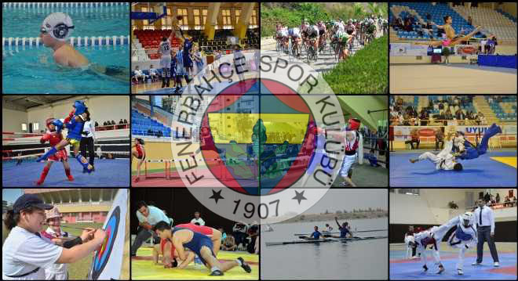

FENERBAHÇE NE ZAMAN VE KİMLER TARAFINDAN KURULMUŞTUR?
Fenerbahçe Spor Kulübü, 1907 yılında Nurizade Ziya Songülen, Ayetullah Bey, Necip Okaner, Asaf Beşpınar ve Enver Yetiker tarafından İstanbul'un Kadıköy ilçesi, Moda semtinde kurulan spor kulübü. İlk renkleri sarı-beyaz olup, 1908 yılından itibaren, kurucuları tarafından sarı lacivert olarak değiştirilmiştir.
FENERBAHÇENİN AKTİF OLDUĞU BRANŞLAR
Türkiye'nin en eski, başarılı ve en çok taraftara sahip kulüplerinden biri olan Fenerbahçe'nin etkin şubeleri
futbol, basketbol, voleybol, atletizm, boks, espor, kürek, masa tenisi, yelken ve yüzmedir.
